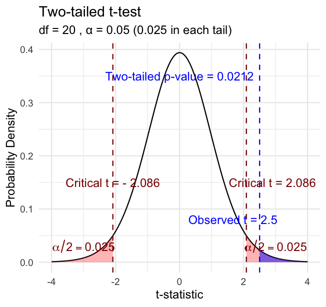

Lecture: Power and Type I & II Error
Errors and power
Hypothesis Components
Useful hypotheses rely on specifying:
- H₀ — the hypothesis of “no effect”
- two samples from populations with the same mean
- or a sample is from a population of mean = X
- Hₐ (research or alternate hypothesis)
- the opposite of H₀
- predicts an effect of x on y
- but does NOT suggest a direction — that’s a prediction

Hypothesis Examples
Together, H₀ and Hₐ encompass all possible outcomes:
- H₀: µ = 0, Hₐ: µ ≠ 0 — mean equals 0 or it does not
- H₀: µ = 35, Hₐ: µ ≠ 35 — mean equals 35 or it does not
- H₀: µ₁ = µ₂, Hₐ: µ₁ ≠ µ₂ — mean of population 1 equals mean of population 2, or it does not
- H₀: µ > 0, Hₐ: µ ≤ 0 — can be directional: mean is greater than 0, or mean is not greater than 0
- this becomes a one-sided test, since it predicts only one direction
Statistical Testing Framework
Statistical tests assess the likelihood of the null hypothesis being true.
- If H₀ is likely false, Hₐ is assumed correct
- More precisely: the long-run probability of obtaining our sample value (or a more extreme one) if the null hypothesis is true
- p(data | H₀) — the probability of observing the data given that H₀ is true
Understanding P-Values
Hypothesis tests are expressed as a p-value (0 = never, 1 = always).
Interpret a p-value as: the probability of obtaining a sample value of the statistic (or a more extreme one) if H₀ is true.
- High p-value: high probability of obtaining our sample statistic under H₀
- if H₀ were true, you would frequently observe data similar to your sample
- your observed results are quite compatible with what H₀ predicts
- Low p-value: low probability of obtaining our sample statistic under H₀
- if H₀ were true, you would rarely observe data this extreme
- your results are unusual under H₀ — either you witnessed a rare event, or H₀ may be incorrect
Fisher’s Perspective
“If p is between 0.1 and 0.9 there is certainly no reason to suspect the hypothesis tested. If it is below 0.02 it is strongly indicated that the hypothesis fails to account for the whole of the facts. We shall not often be astray if we draw a conventional line at .05 …”
— R.A. Fisher, on the p-value as an informal measure of discrepancy between data and H₀

Type I and Type II Errors — From Real Distributions
When making decisions based on hypothesis tests, two types of errors can occur:
Type I Error (False Positive) — rejecting H₀ when it’s actually true. Probability = α.
Type II Error (False Negative) — failing to reject H₀ when it’s actually false. Probability = β.
Statistical Power = 1 − β — increases with larger sample size, larger effect size, lower variability, higher α level.
The farther apart the means, or the lower the variance, the lower the β error — i.e., the higher the power.

Sampling and Pseudoreplication
Pseudoreplication occurs when measurements that are not independent are analyzed as if they were independent.
- A critical consideration in experimental design
- Results in underestimated standard errors and confidence intervals
- Leads to inflated Type I error rates (false positives)
Examples of pseudoreplication:
- Measuring the same individual multiple times
- Treating multiple fish from the same tank as independent
- Using multiple data points from a single site
How to avoid pseudoreplication:
- Identify the true experimental unit
- Use appropriate statistical techniques (e.g., mixed models)
- Be clear about the level of replication